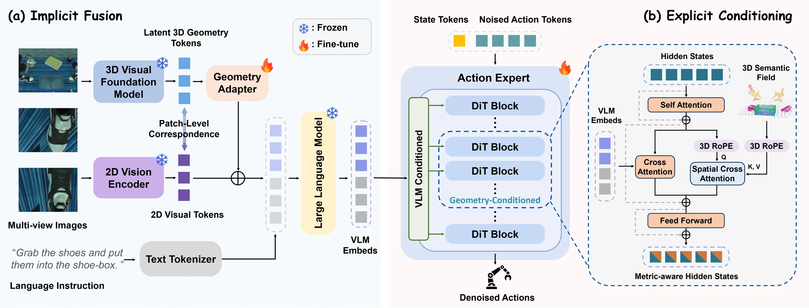
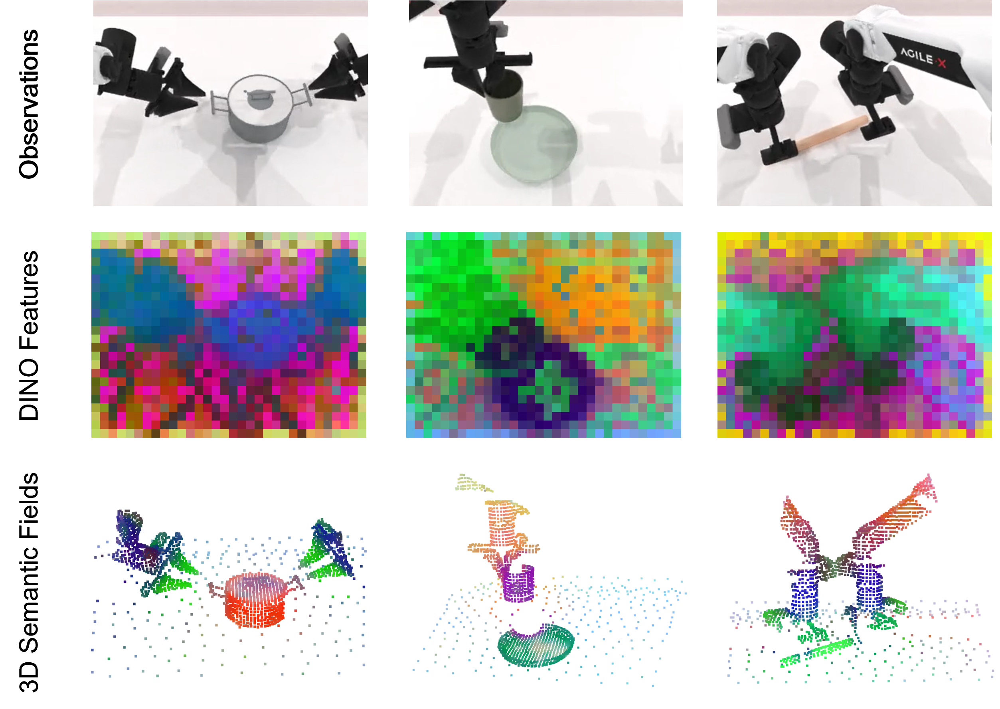
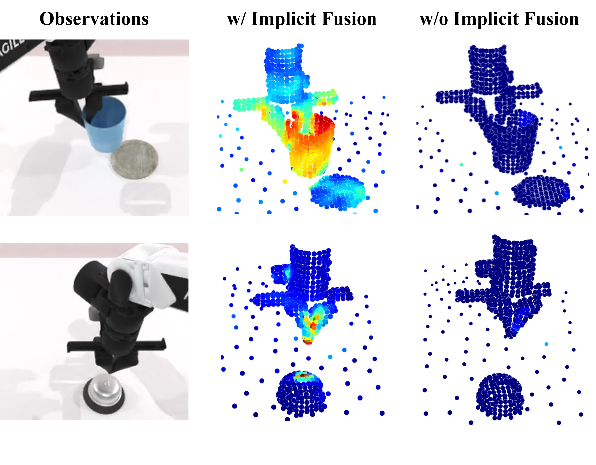

Implicit Fusion
A lightweight residual adapter fuses VGGT geometry features with 2D visual tokens while preserving the pretrained VLM representation.
RoboTwin 2.0
Real-world improvement
Fewer demonstrations
Vision–Language–Action (VLA) models demonstrate strong generalization in robotic manipulation through large-scale multimodal pretraining. However, their reliance on 2D-centric observations limits precise spatial manipulation. Existing approaches introduce implicit spatial priors to improve 3D awareness, but still lack explicit geometry guidance for action generation.
Bridge3D integrates both implicit and explicit 3D geometry guidance into pretrained 2D VLA models, enabling them to “see” and “act” in 3D. Implicit Fusion enriches visual tokens with features from 3D foundation models to improve 3D perception. Explicit Conditioning integrates action denoising with an explicit 3D semantic field to guide precise action generation. Layer-wise linear probing identifies critical blocks for geometric conditioning, improving learning efficiency.
Experiments demonstrate strong performance in high-precision, spatially sensitive manipulation. RDT-Bridge3D achieves the highest average success rate of 84.8% on the 10 selected RoboTwin 2.0 tasks under clean scenes. In real-world experiments, Bridge3D reaches 49.0% average success, outperforming Spatial Forcing by 11.7 percentage points.

A lightweight residual adapter fuses VGGT geometry features with 2D visual tokens while preserving the pretrained VLM representation.
Spatial cross-attention and 3D rotary position embeddings let action hidden states query a semantic point field in a shared coordinate frame.
Linear probing identifies spatial degradation in RDT blocks 7–11, directing geometric guidance to these layers.
| Method | RoboTwin clean | RoboTwin randomized | Real world |
|---|---|---|---|
| Diffusion Policy | 49.0 | 0.0 | — |
| ACT | 72.8 | 5.5 | — |
| 3D Diffusion Policy | 82.8 | 4.1 | — |
| GR00T-N1.5 | 47.5 | 13.7 | 26.3 |
| RDT | 68.7 | 26.1 | 34.3 |
| π₀ | 71.7 | 32.7 | — |
| Spatial Forcing | 77.1 | 35.8 | 37.3 |
| PointVLA | 76.0 | — | — |
| GR00T-N1.5-Bridge3D | 54.4 | 21.2 | — |
| RDT-Bridge3D | 84.8 | 33.6 | 49.0 |

